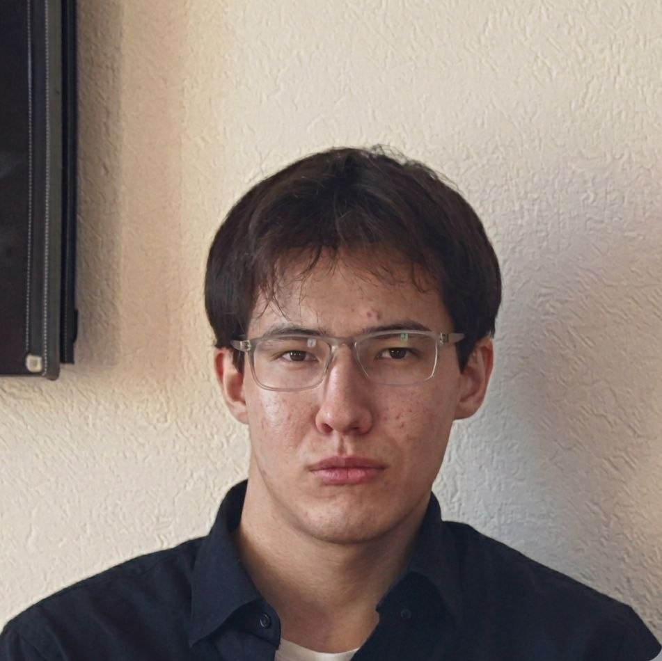

С более чем 3-мя годами опыта в разработке, я специализируюсь на создании веб-приложений, и простых но мощных приложений и их систем. Мой путь — это сочетание логики кода и креатива программируемого дизайна.
Специализация: Full-stack Development
Основные навыки: DB-developer, Python, Java (mods), Golang, Designer
Старт карьеры и освоение Java/java-script в разработке модов для игр и развития навыков в программировании.
Развития навыков в освоении языков программирования (Java, DB-developer, Python, Golang "Начал в 2025г"), и применение их в реальных проектах.
Переход в Full-stack разработку, применение изученных мне навыков в создании проектов таких как:
Веб-приложений - Django, FAST-Api
Приложений - Python, Golang
Видео Игр - Python3(PyGame)
Мини-приложений - PyQT
Продолжаем работать :)